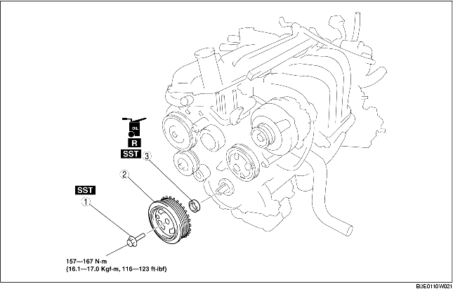

1. Remove the battery cover.
2. Disconnect the negative battery cable.
3. Remove the drive belt. (See DRIVE BELT REPLACEMENT [ZJ, Z6].)
4. Remove in the order indicated in the table.
5. Install in the reverse order of removal.

1. Fix the crankshaft pulley using the SSTs.
2. Remove the crankshaft pulley installation bolt.
1. Remove the oil seal lip using a cutting knife.
2. Remove the oil seal using a flathead screwdriver with the tip protected by a rag to prevent crankshaft oil seal damage.
1. Apply clean engine oil to the new front oil seal.
2. Insert the front oil seal into the engine front cover by hand.
3. Tap the front oil seal in using the SST and a hammer.
1. Fix the crankshaft pulley using the SSTs.
2. Tighten the crankshaft pulley installation bolt.